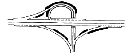
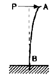
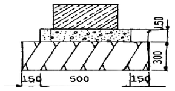
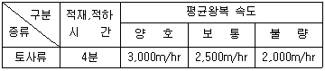
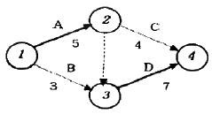

조경산업기사 (2006-03-05 기출문제)
1과목: 조경계획 및 설계
1. 중국식 정원의 특색이라 할 수 있는 아름답고 진귀한 대풍경을 골라 축경적으로 로맨틱하게 묘사한 대표적인 중국전원은?
- 사화
- 서호
- 반원
- 북해공원
(정답률: 60%)

2. 다음 중 제도에서 사용되는 척도에 관한 설명 중 옳지 않은 것은?
- 척도란 대상물의 실제 치수에 대한 도면에 표시한 대상물의 비를 말한다.
- 배척이란 1 : 1보다 큰 척도로 비가 크면 척도가 크다고 한다.
- 한 장의 도면에 서로 다른 척도를 사용할 필요가 있는 경우에는 반드시 모든 척도를 표제란에 기입한다.
- 도면에 사용한 척도는 도면의 표제란에 기입한다.
(정답률: 70%)
3. 디자인을 결정하는 과정에서 고려해야 할 항목이 아닌 것은?
- 기능성
- 심미성
- 모방성
- 경제성
(정답률: 87%)
4. 다음 중 기본계획안에 포함될 수 없는 것은?
- 토지이용 계획
- 동선 계획
- 정확한 시공비 산출
- 유지관리 계획
(정답률: 86%)
5. 홀(Hall)은 인간과의 거리에 대하여 4개의 단계를 설정하였다. 친한 친구 혹은 잘 아는 사람들 간의 일상적 대화에서 유지할 수 있는 최적의 거리는?
- 45.47cm
- 45.47 ~ 121.92cm
- 121.92 ~ 365.76cm
- 457.2cm 이상
(정답률: 87%)
6. 높은 곳에서 지상을 내려다 본 것처럼 지표를 공중에서 비스듬히 내려다 보았을 때의 모양을 그린 것은?
- 렌더링(Rendering)
- 부감투시도
- 견취도
- 조감도
(정답률: 92%)
7. 다음 중 공원이 갖추어야 할 기능으로서 가장 관련이 적은 것은?
- 자연의 공급
- 레크리에이션
- 도시 복원성
- 지역 중심성
(정답률: 48%)
8. 다음 중 도시공원 안의 건축물의 건폐율 규정으로 틀린 것은?
- 묘지공원에서 면적의 제한 없이 100분의 10이하
- 도시자연공원에서 30만 제곱미터 미만의 경우 100분의 10 이하
- 근린공원에서 3만제곱미터 미만의 경우 100분의 20이하
- 어린이공원에서 면적의 제한 없이 100분의 5이하
(정답률: 42%)
9. 향나무 사이에 핀 흰 목련꽃은 미의 형식원리로 볼 때 해당되는 것은?
- 조화
- 대비
- 대칭
- 점층
(정답률: 75%)
10. 도시공원 및 녹지 등에 관한 법률에서 녹지의 점용허가를 받아야 하는 행위가 아닌 것은?
- 녹지의 조성에 필요한 시설 외의 시설ㆍ건축물 또는 공작물을 설치하는 행위
- 토지의 형질변경
- 산림의 간벌
- 물건의 적치
(정답률: 50%)
11. 도면 1/100 축척에서의 4cm2은 실제로 얼마의 면적인가?
- 400m2
- 40m2
- 4m2
- 0.4m2
(정답률: 70%)
12. 계획지구의 외부적 조건을 검토하고자 한다. 토지이용계획, 교통시설계획, 경제개발계획 등에 관한 자료는 다음 중 어느 부문에 관한 자료에 속하는가?
- 자연환경자료
- 사회환경자료
- 인문환경자료
- 물리환경자료
(정답률: 49%)
13. 마당 중앙에는 분수대가 있으며, 사방주위는 관목이나 초화류만 심은 정형식 정원이 있는 곳은?
- 석조전 주변
- 대조전 주변
- 경희궁 정원
- 근정전 주변
(정답률: 80%)
14. 일반적으로 이용자의 80%에 해당하는 자의 출발지점으로부터 시설지역까지의 거리를 무엇이라 정의하는가?
- 배치거리
- 유치거리
- 보행권
- 영향권
(정답률: 72%)
15. 다음 중 광범위한 지역에 대한 개괄적인 조경계획 수립에 활용하기 위해 전국에 걸쳐 작성된 개략 토양도(槪略土壤圖)의 축척으로 가장 적당한 것은?
- 1 : 10,000
- 1 : 25,000
- 1 : 50,000
- 1 : 100,000
(정답률: 62%)
16. G. Eckbo(1978)는 새로운 형태의 정원을 4가지로 구분하였는데 그 형태가 아닌 것은?
- 자연적ㆍ평면적 정원
- 기하학적ㆍ구조적 정원
- 기하학적ㆍ자연적 정원
- 자연적ㆍ구조적 정원
(정답률: 68%)
17. 기후 분석에 관한 설명 중 올바르게 분석된 것은?
- 태양 복사열을 받는 정도는 북쪽 사면일 경우 경사가 완만할수록 많은 열을 받는다.
- 안개 및 서리의 발생은 지형이 높고 배수가 양호한 지역일수록 잘 되지 않는다.
- 공기의 유통 정도는 계곡의 폭이 넓고, 깊이가 얕을수록 잘 되지 않는다.
- 남쪽 사면일 경우 경사가 완만할수록 태양복사열을 많이 받는다.
(정답률: 56%)
18. 다음 중 후기 르네상스시대의 조경유적이 아닌 것은?
- 감베라이아莊
- 가르조니莊
- 이졸라 벨라
- 아드리아누스 빌라
(정답률: 67%)
19. 다음 중 보색관계로 옳은 것은?
- 빨강색 - 청록색
- 노랑색 - 보라색
- 녹색 - 주황색
- 파랑색 - 연두색
(정답률: 76%)
20. 도시계획시설 중 도로를 기능별로 구분하여 설명한 것 중 옳지 않은 것은?
- 주간선도로 : 시ㆍ군내 주요지역을 연결하거나 시ㆍ군 상호간을 연결하여 대량통과 교통을 처리하는 도로로서 시ㆍ군의 골격을 형성하는 도로
- 보조간선도로 : 주간선도로를 집산도로 또는 주요 교통 발생원과 연결하여 시ㆍ군 교통의 집산기능을 하는 도로로서 근린주거구역의 외관을 형성하는 도로
- 국지도로 : 보행자전용도로ㆍ자전거전용도로 등 자동차 외의 교통에 전용되는 도로
- 집산도로 : 근린주거구역의 교토을 보조간선도로에 연결하여 근린주거구역내 교통의 집산기능을 하는 도로로서 근린주거구역의 내부를 구획하는 도로
(정답률: 55%)
2과목: 조경식재
21. 다음 중 잔디별 생육 적온에 따른 분류 중 난지형 잔디에 해당하지 않은 것은?
- 버뮤다그라스
- 라이그라스
- 버팔로그라스
- 비로도잔디
(정답률: 68%)
22. 다음 중 낙엽침엽교목으로 낙엽성의 단엽으로 호생하며, 단지(短枝)에서는 총생의 모습을 보이고 있는 수종으로 옳은 것은?
- Taxus cuspidata S.
- Ginkgo biloba L.
- Picea excelsa L.
- Abies holophylla Max.
(정답률: 69%)
23. 다음 중 측백나무과(Cupressaceae)에 해당하지않는 수종은?
- 향나무
- 편백
- 가이즈까향나무
- 독일가문비
(정답률: 72%)
24. 다음 수목들 중 한냉지에 식재하기 알맞은 수종으로만 짝지워진 것은?
- 가시나무, 굴거리나무
- 동백나무, 소귀나무
- 산벚나무, 자작나무
- 후박나무, 유엽도
(정답률: 69%)
25. 다음 설명 중 옳지 않은 것은?
- 금목서와 은목서는 해에 따라 꽃이 잘피는 때와 거의 피지 않는 때가 있는데 이러한 현상을 격년 개화 또는 해거리라 한다.
- 봄에 개화하는 모든 나무는 개화 전년의 9~10월에 꽃눈이 분화된다.
- 꽃이 노랑색으로 피는 것은 카로티노이드 계통의 색소때문이다.
- 꽃이 붉은 색으로 피는 것은 안토시안 색소 때문이다.
(정답률: 74%)
26. 일본 중남부 이남 산지에 자생하며 어릴 때 생장이 매우 느리고 수형이 정제하여 조각품 같은 느낌을 주는 특성을 갖고 있어 세계 3대 공원수로 꼽히는 수종은?
- Laric leptplipis Gordon
- Cryptmeria japonica D.Don
- Chamaecypar is obtusa Endl
- Sciadopitys verticillata S et Z
(정답률: 46%)
27. 그림과 같은 인터체인지의 검은 부분을 식재로 처리시 그 용도로 적합한 것은?

- 지표 식재
- 시선유도 식재
- 쿠션 식재
- 식수금지 구역
(정답률: 74%)
28. 식재의 건축적 이용에 해당되지 않는 것은?
- 차단 및 은폐
- 공간분할
- 사생활 보호
- 대기정화
(정답률: 80%)
29. 다음 수조 중 산성토양에서 잘 견디는 수종은?
- juglans mandshur ica Max
- Acer palmatum Thunb
- Carpinus laxiflora Bl
- Castanea crenata S. et Z.
(정답률: 30%)
30. 영명으로 tree of heaven이라고 불리며, 공해에 강하고 수관이 우산을 펴든 모양으로 열대 수목 같은 모양의 잎을 가진 수종은?
- Wistaria floribunda DC.
- Melia azedarachvar. japonica MAKINO
- Ailanthus altissima SWINGLE
- Sophora japonica L.
(정답률: 68%)
31. 다음 수목 중 내건성이 강한 수종은?
- 싸리나무
- 삼나무
- 층층나무
- 귀룽나무
(정답률: 70%)
32. 습지에서 잘 생육하며 어려서부터 뿌리를 물속에서 키우면 기근이 발달하여 뿌리부분이 물속에 잠기어도 생육이 가능한 수종은?
- Taxodium distichum RICHARD
- Cryptomeria japonica D
- Lindera obtusiloba BLUME
- Prunus takesimensis NAKAI
(정답률: 44%)
33. 삼림이나 들판의 내부보다 경계부 지역에서 식물상과 동물상이 다양하게 나타나는 현상을 일컫는 용어는?
- 서식지(habitat)
- 가장자리 효과(edge effect)
- 생물종 다양성(species diversity)향상
- 이차천이(secondary succession)
(정답률: 79%)
34. 도시공해에 대한 저항성이 강한 수종으로만 짝지어진 것은?
- 향나무, 은행나무, 광나무
- 소나무, 향나무, 전나무
- 은행나무, 단풍나무, 목련
- 삼나무, 개나리, 자작나무
(정답률: 76%)
35. 현재 도시에 수목을 식재 할 때, 가장 가볍게 평가되고 있는 기준은?
- 녹음의 효과
- 공기 오염에 대한 저항성
- 수종 고유의 아름다움
- 화재 방지 효과
(정답률: 20%)
36. 체인블록(chain block)의 주용도라 볼 수 없는 것은?
- 무거운 돌을 지면에 자리 잡아 놓을 때
- 무거운 수목을 싣거나 내릴 때
- 무거운 물체를 가까운 거리에 운반할 때
- 무거운 돌을 높이 쌓을 때
(정답률: 62%)
37. 시야를 방해하지 않으면서 공간을 분할하거나 한정 짓는데 이용할 수 있는 식물재료는?
- 대교목
- 소교목
- 관목
- 지피류
(정답률: 79%)
38. 소나무(H3.5×R10)의 표준적인 뿌리분의 크기는? (단, D=24+(N-3)×d을 이용한다.)
- 63㎝
- 52㎝
- 45㎝
- 26㎝
(정답률: 54%)
39. 바닷가에 식재할 경우 조해에 강한 수종을 선정해서 식재해야 한다. 다음 중 조해에 강한 수종이 아닌것은?
- Cryptmeria japonica D.Don
- Ligustrum japonicum Thumb
- Celtis sinensis Pers
- Albizzia julibrissin Duraz
(정답률: 45%)
40. 근원직경이 10㎝인 수목을 4배 접시분으로 분뜨기를 할 경우 분의 깊이를 얼마로 하여야 하나?
- 10㎝
- 20㎝
- 30㎝
- 40㎝
(정답률: 64%)
3과목: 조경시공
41. 길이 5.0m인 기둥의 지점 조건에 따른 유효좌굴길이가 옳게 연결된 것은?
- 양단 고정인 경우 : 4.0m
- 일단 고정, 일단 자유인 경우 : 7.5m
- 양단 힌지인 경우 : 5.0m
- 일단 공정 일단 힌지인 경우 : 6.0m
(정답률: 66%)
42. 다음 그림에 대한 설명 중 잘못 기술된 것은?

- A점에 하중 P가 작용을 하고 있다.
- B점을 고정지점이라고 한다.
- 하중 P가 증가되면 파괴는 A에서 일어난다.
- 하중 P가 증가되면 파괴는 B에서 일어난다.
(정답률: 66%)
43. 조경공사의 유지관리 표준 품과 관련한 내용 중 옳지 않은 것은?
- 일반 전정의 경우 수종, 수고, 장소에 따라 본 품의 20%까지 가산할 수 있다.
- 가로수의 전정 작업시 상록수는 본 품의 20%를 가산한다.
- 수간 보호에 사용되는 거적너비는 1~2매를 감을 때 9㎝ 접속시켜서 새끼를 감는다.
- 수목류 약제 살포시 액체일 경우에는 본품의 20%까지 가산할 수 있다.
(정답률: 36%)
44. 살수요구량은 수시로 변하게 되는 불확정성을 가지므로 관련 자료의 안정성을 고려하여 1개월을 기준으로 해야 하는데 그 고려 대상이 아닌 것은?
- 증발산율
- 실효강우량
- 살수효율성
- 식물흡수율
(정답률: 37%)
45. 다음 중 등고선의 특징으로 옳지 않은 것은?
- 높이가 다른 등고선은 현애, 동굴을 제외하고는 교차되거나 합쳐지지 않는다.
- 서로 다른 높이의 등고선은 도면 안 또는 밖에서 서로 만나지 않으며, 도중에 소실되지 않는다.
- 등고선 사이의 최단거리의 방향은 그 지표면의 최대 경사로서 등고선에 수직방향으로 강우시 배수방향이 된다.
- 요경사에서 높은 쪽의 등고선은 낮은 쪽의 등고선의 간격보다 더 넓게 되어 있다.
(정답률: 66%)
46. 열경화성 수지(熱硬化性樹脂)가 아닌 것은?
- 페놀수지
- 프란수지
- 폴리스틸렌
- 알키드수지
(정답률: 62%)
47. 다음 중 공사용 재료의 할증율이 가장 큰 것은?
- 수장용 합판
- 시멘트 벽돌
- 잔디
- 기와
(정답률: 63%)
48. 다음 그림과 같은 단면도를 갖는 구조물을 10m시공 할 때 터파기의 흙량과 되메우기의 흙량으로 가장 적당한 것은?(단, 터파기는 수직터파기로 실시한다.)

- 터파기흙량 = 5.0m3 , 되메우기흙량 = 3.0m3
- 터파기흙량 = 4.5m3 , 되메우기흙량 = 4.0m3
- 터파기흙량 = 4.0m3 , 되메우기흙량 = 2.0m3
- 터파기흙량 = 3.6m3 , 되메우기흙량 = 0.45m3
(정답률: 50%)
49. 다음 공사 발주 방법에 대한 설명 중 옳지 않은 것은?
- 일반경쟁입찰은 저렴한 공사비와 모든 공사 수주 희망자에게 균등한 기회를 제공한다.
- 일반경쟁입찰은 낙찰자의 신용, 기술, 경험, 능력을 신뢰할 수 있는 장점이 있다.
- 제한경쟁입찰은 일반경쟁입찰과 지명경쟁입찰의 단점을 보완 할 수 있다.
- 지명경쟁입찰은 도급회사의 자본금, 보유기재, 자재 및 기술능력 등을 감안해서 적격한 3~5개 정도의 시공업자를 선정하여 입찰한다.
(정답률: 80%)
50. 다음 중 콘크리트용으로 사용되는 골재의 요구 품질이 아닌 것은?
- 청결ㆍ견고하고 내구성이 있는 것
- 알모양은 둥글고 표면은 다소 거칠 것
- 입도가 불규칙하고, 유기 불순물을 포함한 것
- 골재의 강도는 콘크리트 중의 경화된 모르타르 강도 이상일 것
(정답률: 73%)
51. 다음 중 경비에 속하지 않는 것은?
- 운반비
- 안전관리비
- 연구개발비
- 소모재료비
(정답률: 50%)
52. 다음 중 고저측략에서 사용되는 용어 중 잘못 설명된 것은?
- 후시(B.S) : 표고를 이미 알고 있는 점으로, 즉 기지점에 세운 표척의 읽음값이다.
- 지반고(G.H) : 측점의 표고이다.
- 전시(F.S) : 표고를 구하려는 점, 즉 미지점에 세운 표척의 읽음값이다.
- 기계고(I.H) : 단순히 그 점의 표고만을 구하고자 표척을 세워 전시를 취하는 점이다.
(정답률: 56%)
53. 준공서류에 포함하지 않아도 되는 것은?
- 내역서
- 기술자격증
- 품질시험ㆍ검사 성과표
- 시공상세도면
(정답률: 83%)
54. 다음 중 주행속도(running speed)를 옳게 설명한 것은?
- 자동차가 어떤 구간을 주행한 시간으로 그 거리를 나누어서 계산한 속도이다.
- 어떤 자동차가 어떤 구간을 주행하기 위하여 소요된 전체 시간(정지시간 포함)으로 주행거리를 나눈 값이다.
- 도로의 교통량, 주위의 상황 등에 따라서 유지해 나갈 수 있는 속도이다.
- 교통용량이 최대가 되는 속도이다.
(정답률: 47%)
55. 다음 중 댐 등과 같은 대량 콘크리트, 대향단면을 가진 구조물 등에 사용할 수 있는 시멘트로 가장 적당한 것은?
- 보통포틀랜드시멘트
- 조강포틀랜드시멘트
- 중용열포트랜드시멘트
- 알루미나시멘트
(정답률: 80%)
56. 다음 수경시설 설계시 수조의 크기는 분사되는 분 수 높이의 최소 몇 배 정도 크기이어야 하는가?
- 1배
- 2배
- 3배
- 4배
(정답률: 54%)
57. 목재의 방부처리를 위하여 정착성의 수용성 목재 방부제를 처리 하는데 C.C.A를 구성하는 물질은?
- 크롬, 황, 철
- 크롬, 구리, 비소
- 철, 황, 동
- 비소, 유황, 구리
(정답률: 85%)
58. 수목의 약제살포는 2m이상인 수목의 경우 수목 1주당 특별인부 0.01인, 보통인부 0.03인이 소요된다. 수고 3m인 느티나무 5주에 약제를 살포할 경우 소요되는 노임은 얼마인가?(단, 특별인부 64,000원/일, 보통인부 40,000원/일)
- 1,840원
- 3,200원
- 6,000원
- 9,200원
(정답률: 66%)
59. 식재할 표토 20m3를 80m 지점으로 손수레를 이용하여 운반할 때 하루의 운반 횟수로 가장 적당한 것은?(단, 운반로는 보통이고, 작업시간은 450분, 적재ㆍ적하시간, 왕복 속도는 아래와 같다.)

- 25.0회
- 43.6회
- 57.4회
- 62.8회
(정답률: 57%)
60. 다음 공정표를 설명한 것 중 옳은 것은?

- 작업 총 소요일수는 12일이다.
- D는 B가 이루어지기만 하면 작업 가능하다.
- 주공정선은 B → D 이다.
- 점선부분의 더미 작업에는 1일이 소요된다.
(정답률: 97%)
4과목: 조경관리
61. 100m2 평지에 0.2×0.2×0.03m 규격의 잔디로 어긋나기 공법을 적용하여 식재하고자 한다. 잔디의 소요량은?
- 2,500매
- 1,750매
- 1,500매
- 1,250매
(정답률: 40%)
62. 다음 중 가장 많은 전정을 요하는 수종으로 짝지워진 것은?
- Sophora japonica L , Celtis sinensis Pers
- Zelkova serrata Makino , Picea abies Karst
- Gardenia jasminoides for . Grandiflora NAKAI , Betula platyphylla var . japonica Hara
- Ligustrum obtusifolium S. et Z. , juniperus chinensis var . globosa HORNIBR
(정답률: 53%)
63. 표면 배수시설의 점검내용 및 보수방법 중 옳은 것은?
- 기성제품인 U형 측구는 연결 이음새에 결함이 많아 중점 점검한다.
- 토사측구의 경우 단면에 변화를 주어 유속을 저지 시키도록 한다.
- 맨홀을 새로이 설치할 때는 자연침하를 고려하여 주위 보다 약 1cm 정도 높게 한다.
- 토사지 보다 포장지역의 집수구가 빠른 유속에 의한 침전물이 많아 수시로 청소한다.
(정답률: 57%)
64. 다음 중 시설물 유지관리 기준의 설정시 고려해야할 내용으로 가장 거리가 먼 것은?
- 장비의 양이나 질
- 감독자의수와 기술수준
- 이용밀도
- 조경시설 이용 프로그램
(정답률: 60%)
65. 한국의 잔디류에서 잘 발생하며, 중부지방에서는 5~6월 경에 17~22℃정도의 기온에서 습윤시 잘 발생하며 Zoysia류의 엽맥에 불규칙한 적갈색의 반점이 보이기 시작 할 때 발견되는 병은?
- 잔디 탄저병
- 잎마름병
- 녹병
- 브라운 패취
(정답률: 61%)
66. 다음 중 간접가설공사끼리 묶은 것 중 가장 옳은 것은?
- 창고, 노무자숙소, 현장사무소
- 창고, 재료치장, 전력설비
- 창고, 노무자숙소, 급수설비
- 창고, 배수 지수설비, 급수설비
(정답률: 66%)
67. 다음 중 바이러스에 의한 수목의 병으로 옳은 것은?
- 포플러모자이크병
- 오동나무빗자루병
- 뽕나무오갈병
- 낙엽송잎떨림병
(정답률: 48%)
68. 적심(摘芯)에 관한 설명으로 가장 적합한 것은?
- 해마다 반복실시하면 가지의 신장을 촉진하는 효과가 있다.
- 가급적 목질화 이후에 실시한다.
- 소나무의 경우 새 잎의 보호를 위해 전정가위보다 손톱으로 순지르기를 한다.
- 대부분의 조경수는 반드시 적심을 실시해야 한다.
(정답률: 97%)
69. 노거수(老巨樹) 관리에 있어서 공동(空胴)의 처리과정이 올바른 것은?
- 부패한 목질부 제거 - 공동 내부 다듬기 - 버팀대박기 - 살균 및 치료하기 - 공동충전재료 메우기 -마감처리
- 부패한 목질부 제거 - 살균 및 치료하기 - 공동내부 다듬기 - 버팀대 박기 - 공동충전재료 메우기 -마감처리
- 부패한 목질부 제거 -공동내부 다듬기 -버팀대박기 - 공동충전재료 메우기 - 살균 및 치료하기 - 마감처리
- 부패한 목질부 제거 - 버팀대 박기 - 공동 내부다듬기 - 공동충전재료 메우기 - 살균 및 치료하기 -마감처리
(정답률: 52%)
70. 벤치 및 야외탁자의 재료로서 목재를 이용할 경우 다른 소재들과 비교해 장점에 해당되는 것은?
- 감촉이 부드럽다.
- 성평가공되기 때문에 자유로운 디자인이 가능하다.
- 견고하다.
- 내구성이 좋다.
(정답률: 66%)
71. 관수를 시행한 후 수목의 수분 흡수이용률에 영향을 주는 직접적 요인이라고 볼 수 없는 것은?
- 수목의 영양
- 근계의 발달
- 토양의 깊이
- 대기의 온도
(정답률: 48%)
72. 솔잎혹파리에 관한 설명 중 옳지 않은 것은?
- 솔잎혹파리의 유충 발생 시기는 3~4월이다.
- 유충은 지피물 밑이나 땅속에서 월동한다.
- 성충은 파리와 흡사하며 매우 작다.
- 수간주사로 유충을 구제할 수 있다.
(정답률: 53%)
73. 다음 수목관리 계획 중 정기적으로 수행하는 작업이 아닌 것은?
- 토양 개량
- 전정
- 병해충 방제
- 지주목 보수
(정답률: 70%)
74. 다음 중 잔디밭에 많이 발생하는 클로버 방제에 가장 적당한 것은?
- 이사디액제(이사디아민염)
- 파라코액제(그라목손)
- 디코폴수화제(켈센)
- 글라신액제(근사미)
(정답률: 50%)
75. 옹벽의 변화상태 원인으로 보기 어려운 것은?
- 지반의 침하
- 하중의 감소
- 지반 지지력의 저하
- 기초의 강도 저하
(정답률: 71%)
76. 월동작업 중 동패 우려가 있는 경우 방한조치와 거리가 먼 것은?
- 한냉기 기온에 의한 동해방지를 위한 짚 싸주기
- 토양동결로 인한 뿌리 동해방지를 위한 멀칭
- 관목류의 동해방지를 위한 방한 덮개
- 수세가 쇠약한 나무에 수세를 회복하기 위한 약약 수간주입
(정답률: 87%)
77. 잔디밭을 오래 사용하여 토양이 많이 고결(固結)되어 통기(通氣)가 매우 불량하게 되었다. 다음 중에서 통기를 목적으로 행하는 작업과 사용기계가 일치되는 것은?
- 코링(Coring) - 버티화이어(Vertifier)
- 스파이킹(Spiking) - 에리화이어(Aerifier)
- 레노베이팅(Renovating) - 레노베이터(Renovator)
- 레이킹(Raking) - 버티컷터(verticutter)
(정답률: 66%)
78. 조경관리 목표 설정에 포함되지 않는 것은?
- 유지관리
- 운영관리
- 기술관리
- 이용관리
(정답률: 78%)
79. 어린이 놀이터의 유희시설을 보수하고자 할 때 잘못된 방법은?
- 철재부의 도장이 벗겨진 부분은 방청처리 후 유성페인트를 칠한다.
- 회전 놀이시설 축부에는 정기적으로 구리스를 주입하여 마모를 방지한다.
- 볼트 등의 연결부위는 이완 및 풀어지기 쉽기 때문에 너트를 조인 후, 용접하여 영구 고정시킨다.
- 기초부분은 조기에 훼손되기 쉽기 때문에 항상 점검하며 상태가 불량하면 교체하거나 보수한다.
(정답률: 64%)
80. 레크리에이션 수용능력의 분류에 해당하지 않은 것은?
- 생물학적 수용능력
- 시설 수용능력
- 환경 수용능력
- 부지관리 수용능력
(정답률: 47%)